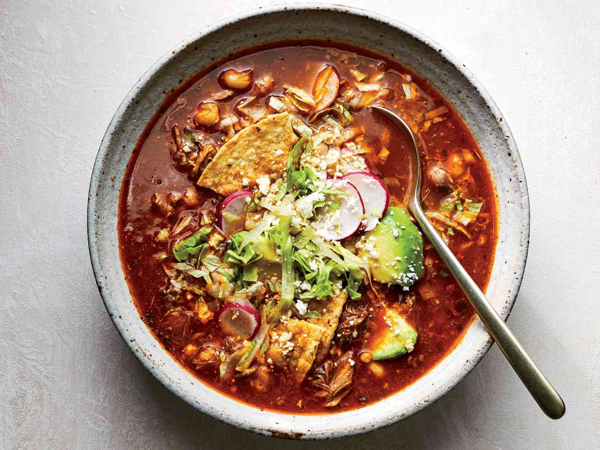

Pozole Rojo

Description
Pozole is a traditional Mexican stew made with meat (usually pork, but sometimes chicken), hominy, chile peppers, and various seasonings. It’s traditionally topped with lettuce, cabbage, limes, onions, avocados, and/or radishes.
Ingredients
These are the ingredients you’ll need to make this classic pozole recipe at home:
- 1 pound boneless pork shoulder, cubed.
- 1 pound boneless pork loin, cubed.
- ½ pound pork neck bones.
- water to cover.
- 1 head garlic, cloves peeled.
- salt to taste.
- 1 large plum tomato.
- 4 ounces dried guajillo chiles, stemmed and seeded.
- 1 clove garlic.
- ¼ teaspoon dried oregano.
- 1 pinch ground cumin.
- 2 cups water.
- 2 (16 ounce) cans white hominy, drained.
Toppings:
- shredded lettuce or cabbage.
- 1 small onion, diced.
- 4 limes, quartered.
Steps
-
Place pork shoulder, pork loin, and pork neck bones in a large pot; cover with water.
Add 1 head of garlic and salt to taste.
Bring to a boil, reduce heat and simmer until meat is tender and cooked through, about 1 hour.
Stir in hominy; bring to a boil and simmer for 20 minutes.
-
Meanwhile, place tomato and guajillo chiles in a pot and add enough water to cover; bring to a boil.
Cook until chiles have softened, about 15 minutes; drain.
-
Place tomato and chiles with salt, 1 clove garlic, oregano, and cumin in a blender; add 2 cups water.
Blend until smooth.
Strain mixture through a fine-mesh sieve and set chile sauce aside.
-
Transfer pork to a work surface and shred with 2 forks.
Discard pork bones and garlic.
-
Stir chile sauce and shredded pork into the pot.
Simmer pozole until flavors have blended, about 5 minutes.
-
Ladle pozole into serving bowls and top with shredded cabbage and onion; serve lime wedge on the side.